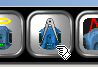
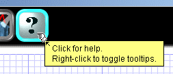

The New Worksheet
When you first start the Scribbler Program Maker, you will be presented with a new worksheet. The worksheet is where you will place the tiles that make up your Scribbler program. The main program always begins at the red "start" tile labeled with the green gear. It ends with the red "end" tile labeled with the yellow- and black-striped barricade. The program shown here is empty and doesn't do a thing. If you were to load this program into the Scribbler, it wouldn't do anything either, except sit there, staring blankly.To make the Scribbler do something, you have to add tiles to its program. The tiles are selected using the buttons in the lefthand column, and must always be inserted between two existing tiles on the worksheet. (The one exception to this is when you define a new subroutine, covered later in this tutorial.)
You need never worry about running off the bottom of the worksheet with your programs, as it will simply expand to accomodate them.
Inserting a Tile
To insert a tile into your program, you must first select it using one of the tool buttons on the lefthand side of the screen. When you click on one of these buttons, it will light up, signifying the tool you have chosen. Here, the LED On/Off tool has been chosen. Once you've positioned the pointer where you want the tile, and the cursor appears, click the mouse once. The tile you've selected will appear, hovering above the
worksheet. In most cases, a configuration box will also pop up, allowing you to configure the tile for the actions you want it to perform. In this case, clicking
on the switches will control what you want the LEDs to do. They can each be turned on, turned off, or left alone (designated by a red-striped switch cover). For this
example, we'll turn the left LED on and the middle and right LEDs off.
Once you've positioned the pointer where you want the tile, and the cursor appears, click the mouse once. The tile you've selected will appear, hovering above the
worksheet. In most cases, a configuration box will also pop up, allowing you to configure the tile for the actions you want it to perform. In this case, clicking
on the switches will control what you want the LEDs to do. They can each be turned on, turned off, or left alone (designated by a red-striped switch cover). For this
example, we'll turn the left LED on and the middle and right LEDs off.
Uploading a Program
To try out your new program, you will need to connect the Scribbler to your computer's serial port. Once you've done this, turn on the Scribbler's power switch. You should be holding onto the Scribbler when you do this, or else have it sitting on a block of some sort, so its wheels are not in contact with anything. This is in case the program currently loaded causes the wheels to turn. You don't want your Scribbler rolling off the table!Next click the upload button, as shown here. Your program will then be transfered to the Scribbler. When it's finished, it will begin executing automatically. In this case, you should see the lefthand LED come on.
Editing a Program
But suppose what you really wanted was the righthand LED to come on. No problem! You can add, change, or delete tiles in your program until it's just the way you want it. There are a couple ways to select a tile to edit:1. You can click on the select button (pointing finger), then click on the tile(s) you want to select. Just continue clicking on tiles to add to the selection. If you find you've selected too many, you can start over with a double-click on any tile to select it by itself. There are some limitations to this, however. You can't select part of a program block that includes just one of its boundaries. For example, if you tried to select just the "start program" tile, you'd end up selecting the entire program. This is to ensure that you don't delete incomplete program blocks, leaving behind a malformed program. It's part of Scribbler's guarantee that your program will never contain errors.
2. You can right-click on any tile at any time to select it. This also automatically clicks the select button for you, so you can continue to select more tiles or edit the one(s) selected.
Once a tile or group of tiles has been selected, you can right-click on it to bring up the edit menu, as shown here. The edit menu contains buttons for copying to the clipboard (the two green tiles), cutting to the clipboard (the scissors) and deleting (the trashcan). Each of these will light up when you select it, and you can select only one. To cancel a selection, just click on it again. To make the selected action take place, click the "okay" button (the green checkmark).
If you've selected just one tile, or a single syntactic group of tiles, such as a loop or conditional (covered later), there will also be a button on the far left which displays the type of tile or group selected. When you click on this button, the original edit screen for the tile or group comes up, enabling you to change its contents.
 With the clipboard selected, move the mousepointer just below the original LED tile, and click. A clone of that tile will be inserted into position from the clipboard.
You can think of the clipboard as just another tile (or group of tiles) to be inserted. And, as with single tiles, the program will not let you insert tiles from the
clipboard into places they don't belong.
With the clipboard selected, move the mousepointer just below the original LED tile, and click. A clone of that tile will be inserted into position from the clipboard.
You can think of the clipboard as just another tile (or group of tiles) to be inserted. And, as with single tiles, the program will not let you insert tiles from the
clipboard into places they don't belong.
| If you were to upload this program to the Scribbler, you would probably only see the righthand light come on. The lefthand light from the first tile would flash on so briefly that you wouldn't even be able to see it. |
Saving a Program
 Here's what's left after the delete. You can save this file to the hard drive for later retrieval simply by clicking the save file button, as shown. This will bring up
a file save dialog box that will let you choose a name for your file and select a location to store it.
Here's what's left after the delete. You can save this file to the hard drive for later retrieval simply by clicking the save file button, as shown. This will bring up
a file save dialog box that will let you choose a name for your file and select a location to store it.
Clearing the Worksheet
Once your program is saved (or if you don't care if it gets zapped), you can clear the worksheet and start fresh. Just click the new worksheet button, as shown.Loading a Program
To reload your program, or to load a different one into the worksheet, click the load file button, as shown. A dialog box will come up which will let you select which program you want to load.Restoring the Factory Program
To restore the program the Scribbler came loaded with, plug the serial cable into the Scribbler's programming port and turn the Scribbler on. Then click the restore button. The Scribbler's factory program will then be uploaded. This operation has no effect on the current worksheet.Calibrating the Scribbler
 The Scribbler comes from the factory with motor calibration constants and default light sensor constants programmed in. However, after an initial break-in period, if your Scribbler seems to have trouble moving in a straight line when you tell it to, it may be desirable to adjust the calibration. It's a simple process. Here's how to do it.First, upload the calibration program using the calibrate button, shown here.
Place the Scribbler on a smooth surface where it has room to move forward. Then press the reset button four times in rapid succession. After a short delay, the Scribbler will roll forward, then back. While rolling forward, be sure to observe whether it moves straight, or curves to the right or left.
If it curves right, you will want to adjust it to move left a little more. To do this press the reset button twice in rapid succession. The left LED will flash, indicating the desired correction has been made. You can do this as many times as necessary.
If it curves left, you will want to adjust it to move right a little more. To do this press the reset button three times in rapid succession. The right LED will flash, indicating the desired correction has been made. You can do this as many times as necessary.
You can always check your adjustments by pressing the reset button four times in rapid succession and watching the Scribbler move forward and back.
To calibrate the light sensors, place the Scribbler on a flat surface in a well-lit room. Press the reset button five times in rapid succession, then stand back and stand still. The Scribbler will play a short tune and then begin to spin around on its center about five or six times. (If the room is too dark it will stop before the entire sequence is finished and emit a low-pitched buzz. Just brighten the room and try again.) It's important that there not be any motion in the Scribbler's field of view while it's spinning, so stand still! When the rotations stop, the Scribbler will play a final "Ta Da!", whereupon its light sensors will have been calibrated.
To erase the Scribbler's motor and light calibration info and start over, press the reset button six times in rapid succession. You will hear two beeps, signifying that default calibration values have been set.
None of these operations have any effect on the current worksheet. But you do have to upload the worksheet program to the Scribbler again in order to use it.
Monitoring Sensors
The monitor button will give you access to the real-time sensor monitoring program. Make sure your Scribbler is powered up and connected to your PC, then click on the button, as shown, to transfer to the monitor program.When the monitor program starts, you will be standing inside the Scribbler, just behind the doors to the Sensor Observation Deck, waiting for them to open.
If the monitor program is unsuccessful in contacting the Scribbler, the doors won't open, and a red light will flash, as shown to the left. If this happens, double check to make sure the Scribbler is turned on, has fresh batteries, and is connected to your computer. Then try again.

However, if the monitor program is able to contact the Scribbler, the doors will slide open, and you will be able to see what's happening inside the Sensor Observation Deck.
The line sensor consists of two infrared LEDs and their associated detectors. The display shows the current state of the line sensor in the righthand panel. In the picture below, the righthand sensor is picking up a reflection; the lefthand one is not.
The light sensors reside behind the three oval holes near the top. As the light received by the Scribbler changes, these holes will brighten and darken in response. Also, the three bargraphs in the center panel of the display will rise and fall, and their associated numbers will change. You can use these numbers in your programs as settings for the light detector.
IMPORTANT NOTES:
- While the monitor program is running, you will not be able to upload any other programs to the Scribbler. If you try, you will get an error message. To upload another program, first exit the monitor program by clicking the "X" in its upper righthand corner.
- After the monitor program exits, any program that was loaded before you started the monitor will have to be reloaded.
- If the monitor program loses communication with the Scribbler, its display screeen will go blank. When communication is restored, the screen will again display sensor status.
Help and Tooltips
 To bring up this help file, you most likely clicked the help button, as shown. If the help button is lighted, the tooltip system is also enabled. Tooltips are little balloon boxes that pop up occasionally when you linger on a button or control for awhile. They're designed as reminders about what each control does. Once you become familiar with the program's functions, these tooltips may seem more annoying than helpful. In that case you can simply turn them off with a right-click on the help button. Another right-click will turn them back on, and so forth.For more detailed help, and for the latest information about the Scribbler and its software, visit the Scribbler website at www.ScribblerRobot.com.